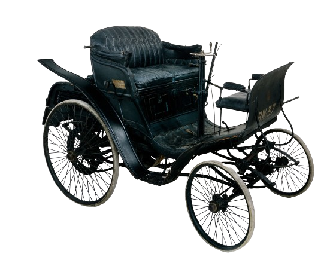

Mercedes-Benz es una de las marcas de autos más icónicas y reconocidas del mundo. La historia comienza en 1886, cuando Karl Benz inventó el primer automóvil con motor de combustión interna, el Benz Patent-Motorwagen. Poco después, Gottlieb Daimler y Wilhelm Maybach también desarrollaron su propio vehículo motorizado.
En 1926, las compañías de Benz y Daimler se fusionaron para formar Daimler-Benz, y de ahí surgió la marca Mercedes-Benz. El nombre "Mercedes" proviene de un automóvil diseñado por Maybach y bautizado en honor a Mercedes Jellinek, la hija de un empresario austriaco.
Desde entonces, Mercedes-Benz se ha destacado por su innovación, calidad y lujo, produciendo algunos de los autos más avanzados y elegantes del mercado. A lo largo de su historia, la marca ha sido pionera en la implementación de nuevas tecnologías en sus vehículos, como los frenos ABS y los sistemas de seguridad.
Hoy en día, Mercedes-Benz sigue siendo un líder en la industria automotriz, con una amplia gama de vehículos que van desde autos de lujo hasta camiones y autobuses, manteniéndose a la vanguardia en tecnología, diseño y sostenibilidad
El primer auto que producido Mercedes es el Benz Motor-Velocipede o Benz Velo. Este fue patentado el 29 de enero de 1886, y fue producido hasta 1893.
